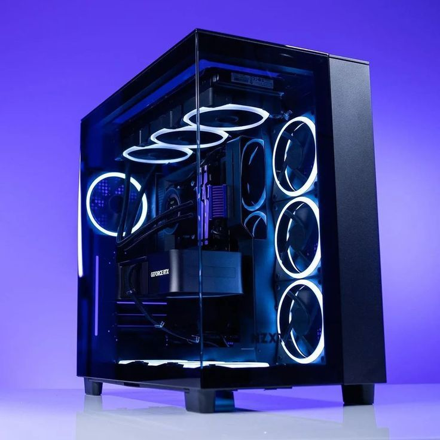
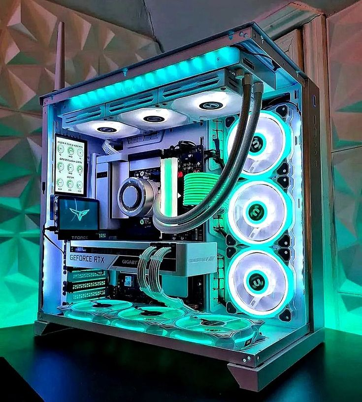

Consejos para cuidar tu laptop
Las laptops son herramientas indispensables en la actualidad, y cuidarlas puede alargar mucho su vida útil...
Se recomienda limpiar el teclado y la pantalla regularmente, mantenerla alejada de líquidos y evitar sobrecalentamientos...

El futuro de los smartphones
Los teléfonos inteligentes han cambiado la forma en que vivimos. Actualmente, los fabricantes trabajan en pantallas flexibles, cámaras cada vez más potentes...
En los próximos años veremos dispositivos con inteligencia artificial integrada, baterías más duraderas y conexiones ultrarrápidas 6G...

¿Vale la pena una PC Gamer?
Las PC Gamer son muy populares gracias a su potencia y capacidad de actualizarse con el tiempo...
Aunque requieren una inversión más grande, ofrecen mejor rendimiento, durabilidad y la posibilidad de disfrutar los juegos en la más alta calidad...

Computadoras para trabajo remoto
El trabajo remoto se ha vuelto esencial, y contar con una computadora adecuada marca la diferencia...
Se recomienda usar laptops ligeras con buena autonomía, cámaras integradas de calidad y conectividad Wi-Fi de última generación...